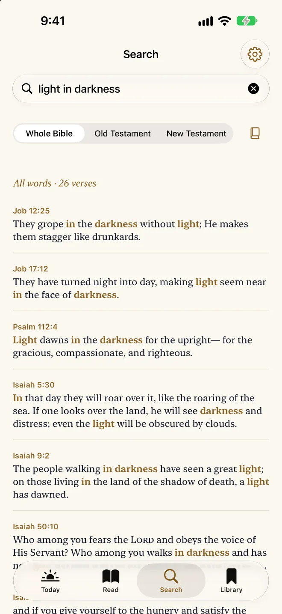

An offline Bible app for iPhone, iPad and Apple Watch
Lamp & Line keeps the complete Bible on your device. It opens on a plane, in a basement, or with every network switched off, and there is nothing to download first.
Free. One optional purchase, never a subscription.
What is on your device
When Lamp & Line installs, the whole Berean Standard Bible comes with it: 66 books, 1,189 chapters and 31,086 verses, with the translation’s 4,569 section headings and 4,846 footnotes. The daily readings are stored there too. Nothing is fetched later, so nothing can fail to arrive.
You can read the same text on this site, a chapter to a page: Psalm 23, John 3, Romans 8, or any book and chapter.
What works with no connection
- Reading. Every book and chapter, with poetry set in its lines and footnotes a tap away.
- Search. Type “John 3:16”, “Jn316”, “Psalm 23”, a phrase in quotation marks, or the words you half remember. The whole Bible is searched on the device in a fraction of a second.
- Read aloud. In the reader’s toolbar. It reads the chapter with your device’s own voice and turns the page as it goes.
- Today. The day’s Psalm, reading and prayer, on iPhone, iPad and Apple Watch.
- Your bookmarks, highlights and notes. They are kept on the device you wrote them on.
- Reading plans. The whole Bible in a year, or the New Testament, with no dates to fall behind.
- Word study. With Lamp & Line Full, the Hebrew and Greek behind every word. The tables and the lexicons are built into the app.

On Apple Watch too
The Watch app carries its own copy of the whole Bible, all 66 books in 6.9 MB, and its own copy of the daily readings. Today is free there, with your phone switched off; reading the whole Bible on the Watch is part of Full. More about the Bible on Apple Watch.
The two things that do use a connection
Buying Lamp & Line Full goes through the App Store. And iCloud Sync, if you turn it on, uses a connection to keep your iPhone and iPad in step. It is off until you turn it on, and reading never waits for it.
Offline is also private
There is no account, no advertising and no analytics. The App Store label reads “Data Not Collected”. With iCloud Sync off, the default, the app makes no network requests of its own. More on what Lamp & Line does not collect.
Questions people ask
- Do I have to download the Bible after installing?
- No. The whole Berean Standard Bible is part of the app, so it is there as soon as the app is installed.
- Does search work offline?
- Yes. Search runs entirely against the copy of the Bible stored on your device. Your searches are never transmitted.
- Does read aloud work offline?
- Yes. It reads the chapter with your device’s own voice, and it is free.
- Which translation is it?
- The Berean Standard Bible, a modern English translation that was placed into the public domain on 30 April 2023.
- Is it free?
- On iPhone and iPad the complete Bible, search, read aloud, bookmarks, notes, Today and one reading plan cost nothing, for good. Lamp & Line Full is one purchase, never a subscription.
Keep the whole Bible on your device
For iPhone, iPad and Apple Watch. Nothing to sign up for and nothing to sign in to: install it and the whole Bible is there.